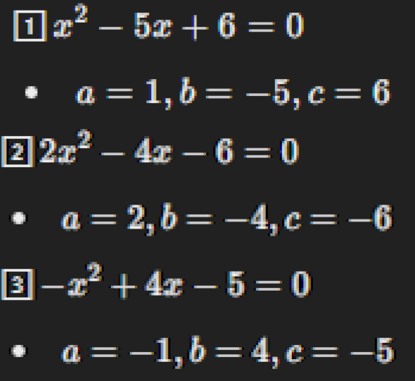
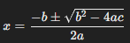
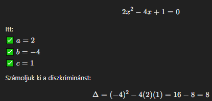
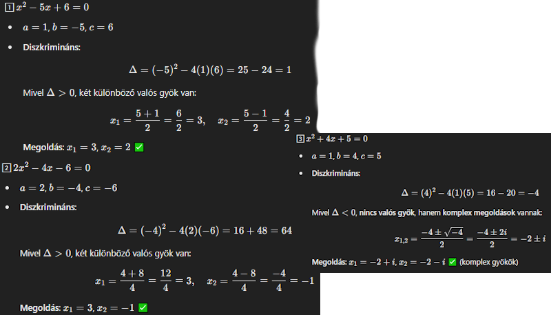

Mi az a másodfokú egyenlet?
A másodfokú egyenlet általános alakja:
ax2 + bx + c = 0

Ebben az a, b és c együtthatók meghatározzák az egyenlet formáját és gyökeit.
A másodfokú egyenlet megoldóképlete
A másodfokú egyenlet megoldásához az alábbi képletet használjuk:

A képlet elemei:
- -b: Az ellentett együttható
- ±: Két lehetséges megoldás (pozitív és negatív ág)
- √(b2 - 4ac): A diszkrimináns gyöke
- 2a: Az osztó (kétszeres)
Diszkrimináns kiszámítása
A diszkrimináns képlete(D=Δ):
D = b2 - 4ac
A diszkrimináns megmondja, hogy hány valós gyöke van az egyenletnek:
- D > 0: Két különböző valós gyök
- D = 0: Egy valós gyök (kettős gyök)
- D < 0: Nincs valós gyök

Próbáld ki!
Add meg az egyenlet együtthatóit, és nézd meg a megoldást:
Feladatok
Oldd meg a következő egyenleteket:
- x2 - 5x + 6 = 0
- 2x2 - 4x - 6 = 0
- x2 + 4x + 5 = 0
